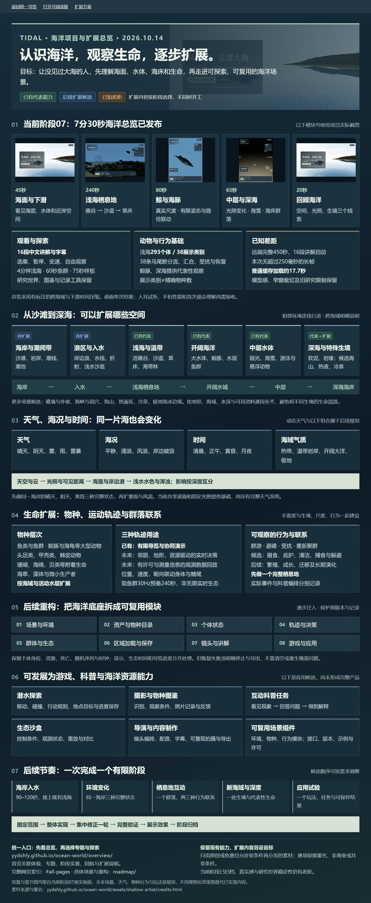
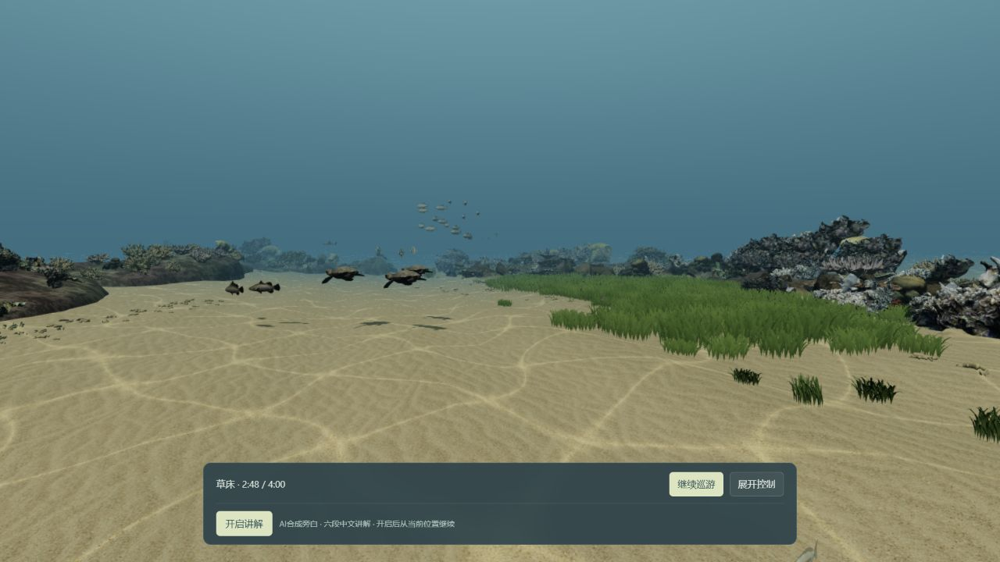
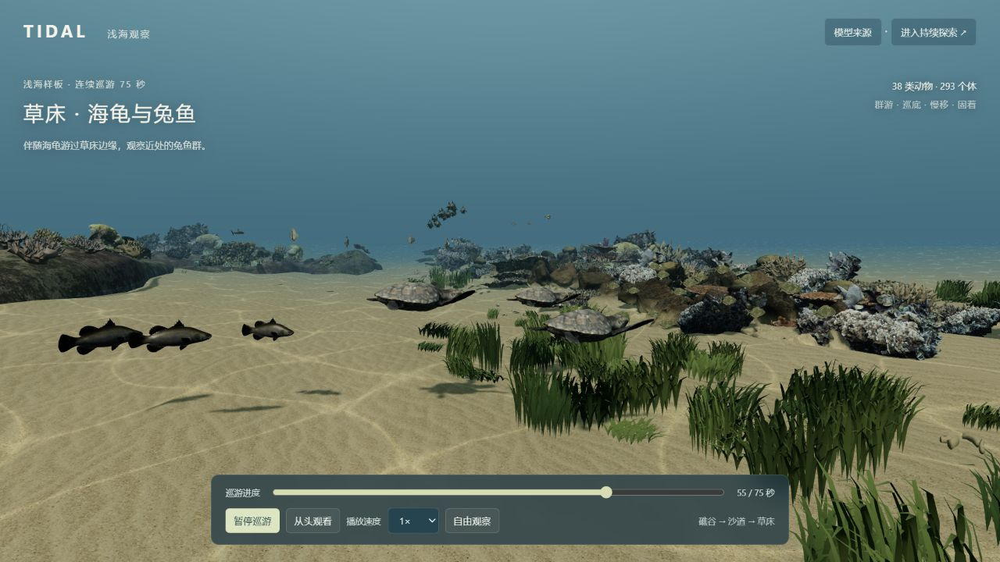
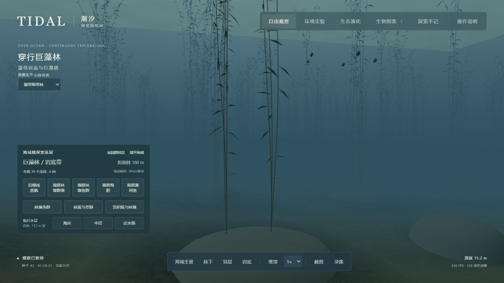
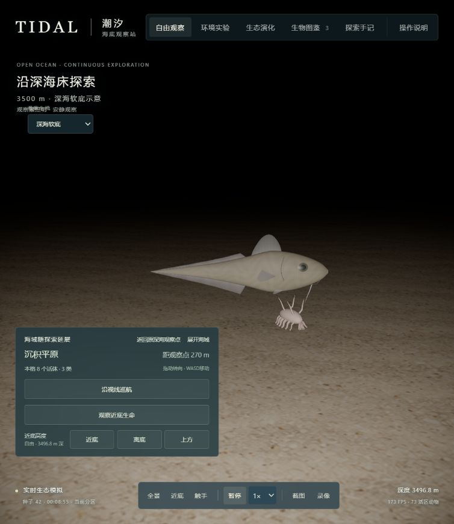
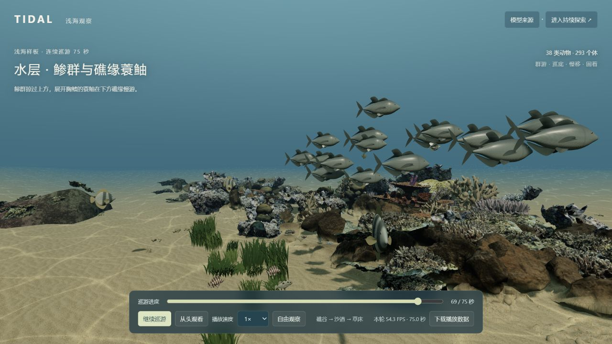

本地与远端完整播放
远端普通桌面访问已1倍速完成450秒，16段讲解正常启动，未记录超过250毫秒的播放停顿。本次导航加载约17.7秒；缓存未受控，不能承诺5秒或全部设备表现。语音启动记录不是人耳听感验收。
看海面与海岸，进入礁谷、沙道和草床，再观察鲸豚与深海生命。沿途有16段中文讲解和字幕，也可以暂停、选择章节或自由观察。语音默认关闭，进入后主动开启讲解。
发布状态：阶段07已发布；7分30秒远端完整播放通过，保留加载与真实感差距本轮公开进度单独记录；下方本地实测不代替公网播放结果。

远端普通桌面访问已1倍速完成450秒，16段讲解正常启动，未记录超过250毫秒的播放停顿。本次导航加载约17.7秒；缓存未受控，不能承诺5秒或全部设备表现。语音启动记录不是人耳听感验收。
规律波纹、动物模型感、窄窗裁切和加载未稳定5秒内仍有差距。研究入口还保留跨区等待、低帧率及部分存档恢复问题。沙滩到深海、天气、更多物种与互动，以及游戏和资源库均属于后续方向。
查看本次发布说明与远端检查 · 查看本地验收范围 。本地验收记录保持原归档含义，当前入口使用当前部署版本；不同海域和水深的衔接有明确的时间压缩说明。
项目实景 · 已实现与后续方案分开标注

阶段07：7分30秒海洋总览，16段讲解；保留4分钟浅海、60秒协同、75秒历史样板及持续探索。已有画面和有限行为可用于演示，尚未完成全海洋生态或纪录片级真实感。
场景：沙滩、潮间带、入水浪区、活礁、海草床、海带林、开阔大洋、中层、深海平原与岩缘；热液区、冷泉等特殊生境另设独立阶段。
环境与生命：晴阴、黄昏、雾雨、风浪、月夜与潮汐；补适生物种、个体轨迹、群游、避障、摄食和相互作用。
潜水探索、摄影图鉴、科普任务、生态沙盒，或可复用的海洋场景与行为组件。游戏还需独立设计玩法、任务、交互、进度与存档；各项均为后续规划。
从此处进入，不必到各历史页面找链接
11个主要入口、15个专题（共22个不同体验地址），13个正式静态网页，以及阶段01–07、发布说明与后续规划。推荐先开启海洋总览；旧研究页的等待、帧率和存档限制保留。这里只整理入口，不声明全部研究线路已重新验收。
61项关联入口；点击分组展开。
先看7分30秒总览，再按需要进入保留主线或研究模块。
7分30秒 · 海面、浅海、鲸豚与深海，带中文讲解
推荐主线 · 鱼群 → 礁谷 → 沙道 → 草床
同一浅海 · 分流、汇合、散开与聚群
早期冻结路线 · 与当前主线范围不同
查看观察工具与各专题入口
研究入口 · 可选章与变速，跨区可能等待
研究路线 · 4分钟观察，区域准备另计
区域入口 · 礁体与动物群落
区域入口 · 草床、沙底与坡面
研究入口 · 部分旧存档无法恢复，可能卡顿
研究入口 · 底栖群落与照明，可能卡顿
15个专题入口；与主要入口有4个重合地址，分别按用途展示。
浅海专题；出现受生境、种子与已有存档影响
浅海专题；出现受生境、种子与已有存档影响
浅海专题；出现受生境、种子与已有存档影响
浅海专题；出现受生境、种子与已有存档影响
浅海专题；出现受生境、种子与已有存档影响
浅海专题；出现受生境、种子与已有存档影响
浅海专题；出现受生境、种子与已有存档影响
海带林专题；旧存档恢复与低帧率限制保留
海带林专题；旧存档恢复与低帧率限制保留
海带林专题；旧存档恢复与低帧率限制保留
海带林专题；旧存档恢复与低帧率限制保留
深海专题；旧低帧率限制保留
深海专题；旧低帧率限制保留
深海专题；旧低帧率限制保留
深海专题；旧低帧率限制保留
只列实际发布的public静态网页，保留兼容跳转入口。
署名、来源和再分发条件
正式发布的跳转页，进入当前overview
冻结样板的实景与检查边界
当前主推荐、总入口、阶段和扩展方向
含历次能力说明与历史验收范围
新图、当前阶段和未来扩展清单
用项目实景说明底座、扩展与应用
空间、天气、物种、轨迹、生态和游戏能力
三个完整栖息地与两段自然过渡
当时的对照画面与有限检查结果
分流、汇合、散开、重新聚集与旁白
首轮海洋总览本地归档
7分30秒海洋总览；保留本地历史口径
GitHub中的历史阶段文档；当时结果不自动代表当前远端验收。
阶段归档 · 历史条件按各文档说明
阶段归档 · 历史条件按各文档说明
阶段归档 · 历史条件按各文档说明
阶段归档 · 历史条件按各文档说明
阶段归档 · 历史条件按各文档说明
阶段归档 · 历史条件按各文档说明
阶段归档 · 历史条件按各文档说明
阶段归档 · 历史条件按各文档说明
阶段归档 · 历史条件按各文档说明
阶段归档 · 历史条件按各文档说明
阶段归档 · 历史条件按各文档说明
阶段归档 · 历史条件按各文档说明
阶段归档 · 历史条件按各文档说明
区分已发布事实和后续方案；游戏化仍未启动。
目标、当前阶段、场景举例、物种轨迹和应用方向
六个扩展维度、有限阶段与验收标准
源码、图示、归档标签与使用说明
发布记录 · 历史条件按各文档说明
发布记录 · 历史条件按各文档说明
发布记录 · 历史条件按各文档说明
发布记录 · 历史条件按各文档说明
发布记录 · 历史条件按各文档说明
发布记录 · 历史条件按各文档说明
没有匹配入口。试试“浅海”“天气”“鱼群”或阶段编号，也可以清空搜索。
所有项目内网页使用相对入口，可部署在站点根目录或/ocean-world/。历史文档在GitHub打开；本地output/中的未发布验收页没有列入公开导航。下载公开入口清单
以下保留阶段05能力图内容与历次验收范围
以下保留阶段06当时的本地结果；同一公开总览入口现在使用当前部署版本，不是阶段06运行回放。
本地完整播放已完成（保留差距）。从海面认识海洋尺度，沿既有浅海看礁谷、沙道与草床，再比较开阔水域的鲸豚、约700米中层与约3500米海床，最后回顾空间、光照和生境三个线索。
四章＋回顾：海面45秒 → 浅海4分钟 → 开阔水域80秒 → 深海65秒 → 回顾20秒。提供16段中文讲解与字幕：沿用浅海10段，新增6段；语音默认关闭。
素材与范围：浅海复用原场景与资产，鲸豚为本轮原创模型，深海复用已有动物模型。不同海域和水深为压缩观察点切换；深海使用观察灯。它们是代表性科普编排，不声明同站共现、野外密度或全海洋生态预测。
本地实播：正常1×完成450模型秒 / 450.6291实秒，无操作中断，16段讲解有playing记录，无媒体或控制台错误。深海有一次645.8ms长帧，不能称全程流畅；普通本地缓存导航5.3288秒，不是冷公网或5秒验收。模型感与亮天空对白字的对比度不足保留。
打开当前部署版总览（非阶段06回放） · 查看阶段06历史实景与验收 · 查看新增范围 。人耳试听、首次观众理解、变速播放、手动拖动视角和390px手机体验在该轮未验收；阶段06当时尚未部署。后续发布状态见上方阶段07；既有入口及专题继续保留各自范围与限制。
这是运行版本5e4c280的历史检查记录。阶段07发布不会自动修复这些研究问题，也不表示当时的每个结果已经重新验收。
推荐主线：4分钟浅海、60秒鱼群与75秒样板均完整播放；README引导图 → 导览 → 主线已实际点击验证。“更多体验”展示10个主要入口，附录有15个专题链接，合计21个不同体验地址，20个进入实际场景。
研究入口：导演前3章能进入，第3章仍有跨区等待9秒；未遍历全部67章。生命巡游完整完成240模型秒，但初始准备约45秒，途中仍有长帧。浅海专题可进入，不能据短时检查认定全部路线流畅。
已知限制：海带林主入口本次既有存档恢复失败，原记录保留；其余3个海带林专题与4个深海专题仅约2–5 FPS。主线加载约13.7秒、75秒样板约6.4秒；后台浏览器的主线240模型秒耗时267.5实秒，不能据此认定前台流畅达标。截图下载、手记标记与回访尚未确认。
本次对应远端运行 5e4c280；普通缓存未清、后台浏览器且有其他页面，不是冷启动、手机或全部61个内部操作验收。后续本地修复不自动改变此远端结论。阶段05历史导航发布记录 · 查看结构化范围与检查条件
目标是纪录片式的海底世界。
原阶段05以4分钟浅海为主线，
先观察鱼群，再走进三个栖息地。

目标分解 · 不用一个完成百分比掩盖差异
连续地形、光照水色、生境过渡
已有生成与环境表现真实感仍未达纪录片标准鱼群、底栖、附着生物与海草藻林
目录与代表群落已接入并非所有种类同时出现沿探索生成，回访保留当地状态
已实现分区生成与保存240 秒生命路线按完整实播单独验收跟随观察、条件实验、资源与行为
已有定性生态模型尚非科研级生态预测60秒协同观察是4分钟主线的开场；持续探索分别验收
开场38条乌尾鮗协同 → 礁谷 → 礁沙交界 → 沙道 → 沙草交界 → 草床。保持上下与远近水层，底栖居民保留合理支撑；十段中文讲解，可接管移动再返回。
新浅海、海带林、深海软底，以及保留的原浅礁入口。群落按底质、水深和空间出现，提供自由移动、生态实验和本机保存。
地貌 × 植被 × 动物 · 分层分布，而非将全部元素堆在一个画面

礁墙 · 台地 · 沙沟 · 草床 · 外坡
水层：礁鱼、鱼群、鲨、魟、蝠鲼、海龟。
近底：章鱼、乌贼、虾蟹、螺、海星、海胆、海参。
附着与植被：珊瑚、海绵、海葵、贝类、海草。

岩底 · 林下 · 藻间 · 冠层 · 空地
水层：岩鱼、海藻鱼、竹荚鱼、豹鲨、鱿鱼、水母。
近底：海胆、海星、鲍、石鳖、藻蟹。
附着与藻类：巨藻、翼柄藻、珊瑚藻、海绵、海鞘。

沉积平原 · 缓坡 · 岩露头 · 离底水层
近底：海猪、鼠尾鳕、海蜘蛛、蛇尾、海胆。
附着：海葵、海百合、黑珊瑚。
水层：小飞象章鱼、鼬鳚、冠水母、吸血乌贼、红糠虾。
目录含动物、珊瑚及藻类等代表条目，不等于 145 个精确鉴定且同时可见的物种。以上图像均来自项目实景记录；历史截图仅展示当时外观。
从海床空间，到生命活动，再到可观察、可保留的结果
不规则礁体、连续海床、沙面脊槽、礁脚碎石、草丛与裸沙间隙；附着物按岩面落地，动物按活动净空布置。
稀疏探索物：沉木、灌水沉底玻璃瓶。沙形与扰动是视觉及几何近似。水深光衰减、水色与雾、沙面焦散、悬浮颗粒、局部扬沙、植物随流摆动；深海以观察器照明观看。
可调时刻、水流、浑浊度与补给；未求解真实水动力或砂粒输运。38条乌尾鮗依邻近同伴调整间距和方向，避开既有礁体；局部演示扰动传播后重新聚集。其余动物保持觅食、近底、附着与巡游呈现。
固定场景邻居求解预备播放，导向与单次刺激有编排；不是完整自主生态。初级生产、藻食、浮游摄食、滤食、碎屑利用与分解回流；观察能量、库存、摄入和部分捕食关系。
使用相对资源与小型食物代理；不代表所有可见动物间的完整食物网。种子与坐标决定分区景观；近处加载、远处释放，后台预备相邻区。保存个体身份、资源和当地演化记录。
本机存储；卸载区暂停演化，回访续接。无云端同步或全球离线演化。生物图鉴、点击个体档案、跟随、环境实验、生态读数、探索手记、返回标记点、截图、录像与数据导出。
录像最长 45 秒，依赖浏览器支持；截图与录像记录 3D 画面。推荐顺序：先看效果，再看能力，最后自己探索
约 4 分钟路线，连接礁区、沙沟、草甸和外坡。也可从草甸、礁谷或其他生境入口直接进入。
约452 m；2026-10-14复查完整完成240模型秒，初始准备约45秒，途中仍有长帧。旧入口体验记录仅作历史参考。打开生命巡游退出自动巡游，WASD 移动、Q/E 下潜/上浮、Shift 加速；拖动转向、右键平移、滚轮靠近。
点击动物 → 档案 → 跟随；打开环境实验或探索手记，留下观察记录。打开礁谷探索体验页面常驻“更多体验”，专注观看、下载构建及加载错误时也能切换入口；研究页面可直接“返回4分钟浅海主线”。研究入口的区域准备、视觉与性能需单独验证，不能套用主线实播结果。历史存档与设备会影响体验。
阶段05本地协同基线；新增旁白与远端结果见本轮发布回执
先前本地1×实播60.01秒 / 240.23秒，无操作中断；169项不同相关检查通过。1280×720 / DPR1.5 / RTX4070 Laptop / 渲染比例1，p95分别16.6 / 12.6ms，最长95.9 / 162.4ms。本地正常缓存导航9.336 / 5.119秒，早于新增配音，不是公网冷启动或全设备承诺。
分流、汇合、受扰散开与聚群已形成；远侧分支有局部遮挡，旧资产真实感保持原限制。本次发布加入五段短讲解，完整主线共十段；新增讲解和远端实际播放见本轮发布回执 。查看四个鱼群实景 · 查看栖息地历史对照
以下为2026-10-12的75秒样板v1.0历史记录，不能替代当前4分钟主线的测量结果。

89 个不同定向检查有通过记录（87 + 2）
构建通过 · 捕获 error / warn 为 0 / 0
阶段性产物已固定；是否开启下一阶段，由新的有限目标决定
60秒协同观察与五段讲解 + 4分钟浅海主线与十段讲解 + 75秒历史样板 + 多生境探索原型 + 导演导航 + 生态观察工具 + 本机状态保存。已有源码、素材来源、静态构建与阶段记录。
扫描硬边、动物模型感、草叶重复、远鱼偏小和绕礁局部遮挡保留。固定场景协同演示不等于完整自主生态；本地完成不代表公网5秒加载。旧导演跨区仍有历史等待瓶颈，繁殖与远区持续演化未实现。
鱼群协同、讲解与入口导航在阶段05发布归档；上方旧入口复查保留当时限制。本地修复不等于公网或全部入口通过。当前阶段07发布与后续扩展规划另列在页面顶部。